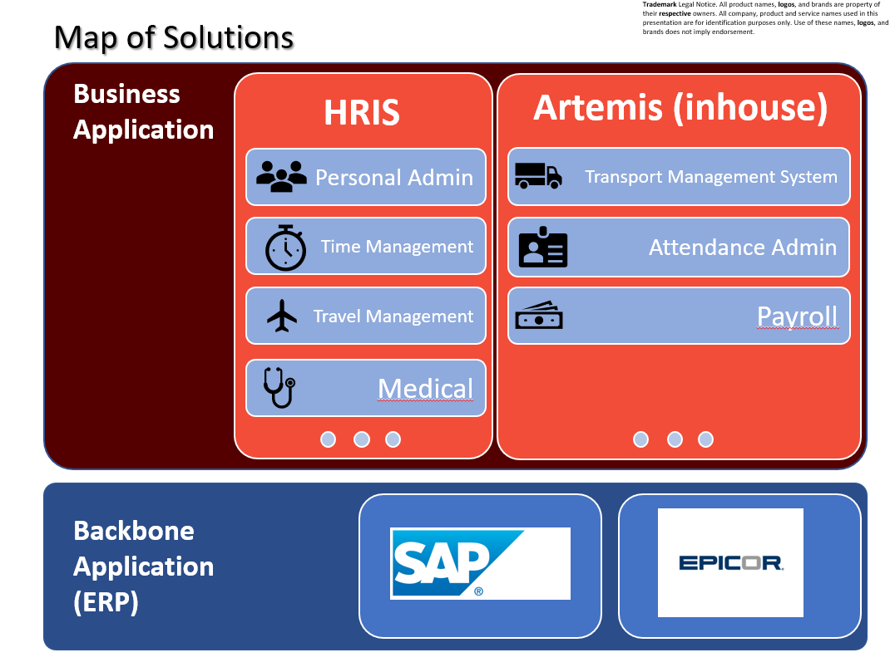
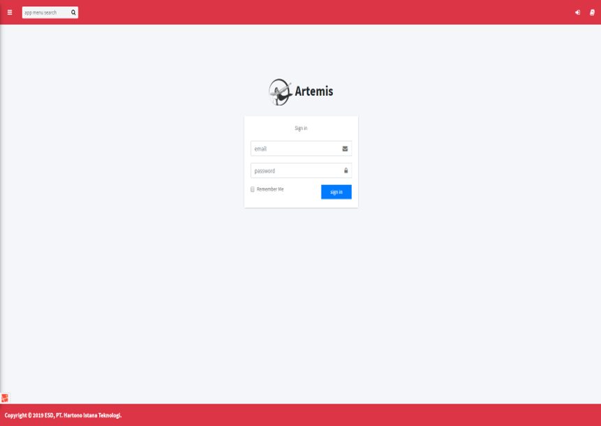
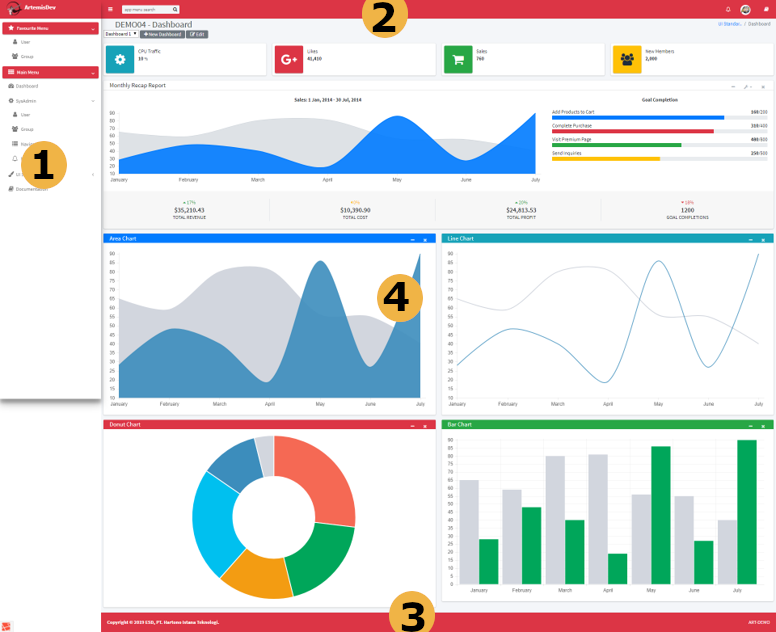

Pengenalan Artemis
Apa itu Artemis
Artemis adalah aplikasi inhouse berbasis web yang dibuat dengan menggunakan PHP framework Laravel. Aplikasi ini berfungsi sebagai aplikasi 3rd party pendukung ke aplikasi utama di PT.HIT yaitu SAP dan Epicor.
Berikut ini adalah gambaran awal tentang hubungan antara Artemis dengan aplikasi lain. 
Feature Artemis antara lain,
- Sebagai aplikasi 3rd party yang menjembatani SAP, Epicor dan HRIS.
- Berbasis web, sehingga dapat dijalankan di banyak platform pengguna tanpa instalasi.
- Dikembangkan secara inhouse PT.HIT, sehingga lebih dapat menyesuaikan kebutuhan.
- Dikembangkan dengan Laravel PHP Framework.
- Mendukung web service / API menggunakan Restful.
- Antar muka pengguna (User Interface) responsif menyesuaikan ukuran layar.
- Keamanan Server berlapis menggunakan protokol koneksi HTTPS dan form POST encryption.
- Ada notifikasi via email dan UI Notification.
- Menyediakan tampilan dashboard.
- Mendukung penggunaan pada mode KIOSK terminal.
- Mendukung authentikasi pengguna menggunakan active directory.
- Mendukung interfacing dengan perangkat IOT (internet of thing).
Apa itu Restful
Kalo dalam SAP kita mengenal web service SAP menggunakan protokol SOAP, di dalam Artemis kita menggunakan protokol REST (REpresentational State Transfer). Pada dasarnya REST menggunakan protokol komunikasi HTTP (Hyper Text Transfer Protocol). Pada REST, REST Server menyediakan resources(sumber daya/data) dan REST client mengakses dan menampilkan resource tersebut untuk penggunaan selanjutnya. Setiap resource diidentifikasi oleh URIs (Universal Resource Identifiers) atau global ID. Resource tersebut direpresentasikan dalam bentuk format teks, JSON atau XML.
Metode HTTP yang umum digunakan dalam arsitektur berbasis REST,
- GET, menyediakan hanya akses baca pada resource
- PUT, digunakan untuk menciptakan resource baru
- DELETE, digunakan untuk menghapus resource
- POST, digunakan untuk memperbarui resource yang ada atau membuat resource baru
- OPTIONS, digunakan untuk mendapatkan operasi yang disupport pada resource
Pengenalan Elemen Layar
Halaman Sign-in
Saat User belum signed-in, secara default akan diarahkan ke halaman Sign-in. Setelah User signed-in, User akan diarahkan ke halaman yang dituju sesuai URL yang dimasukkan sebelumnya.

Struktur Halaman

Tampilan halaman terdiri dari
- Left-Side menu
- Top menu
- Footer
- Main content
(lihat user documentation untuk informasi selengkapnya)
Hak Akses User Artemis untuk masing-masing menu
Hak akses dasar menu Artemis dibagi menjadi:
- no access (tidak mempunyai akses)
- read only (hanya bisa membaca/report)
- write only (hanya bisa create/edit/delete)
- execute only (hanya bisa approve/confirm)
- read & write (bisa read/create/edit/delete/report)
- read & execute (bisa read/approve/confirm)
- full access (dapat melakukan semua hal)
Jika seorang user tidak mempunyai hak akses untuk suatu action, maka link atau tombol untuk action tersebut akan disembunyikan (tidak ditampilkan).
Otorisasi yang lebih detail misal per bagian atau per model tertentu akan diatur pada otorisasi tambahan per model sesuai kebutuhan.
Mode akses masing-masing Group yang dimiliki User dikombinasikan dengan logika OR.
Contoh:
- Group1: Read+Write
- Group2: Write+Execute
- Total hak akses Group: Read+Write+Execute
Bila hak akses User didefinisikan, maka hak akses group akan diabaikan dan menggunakan hak akses User.
Contoh:
- Total Hak akses group: Read+Write+Execute
- Hak akses User: Read
- Total hak akses: Read
Navigation (menu) mempunyai mode
- 0 = disabled navigation -> tidak dapat diakses semua User.
- 1 = enabled -> akses mengikuti hak akses User dan Group, default akses 0.
- 2 = public access -> dapat diakses semua orang tanpa signed-in sekalipun, tetap mengikuti hak akses User dan Group, default akses 4.
Navigation (menu) mempunyai aturan URL khusus
Jika URL dimulai dengan dash (-) maka Navigation tersebut akan membuka window baru saat diklik.
Navigation memiliki TCODE agar memudahkan User dalam mencari Navigation tersebut.